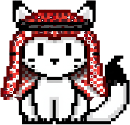

01 · AI SECURITY AGENT
Nashmi نشمي
An AI agent built exclusively for cybersecurity.
A SOC analyzer, CTF coach, security toolbox and practice exams in one app, with an Arabic and English interface.
- Log Analysis (Linux / Windows) and Wireshark analysis (pcap, pcapng, CSV) that work without an API key
- "+ Dashboard" with KPIs, timeline, ATT&CK chips and a 3D evidence graph
- Google sign-in with two-step verification and per-user encrypted PostgreSQL storage
threat score 87events 12,480